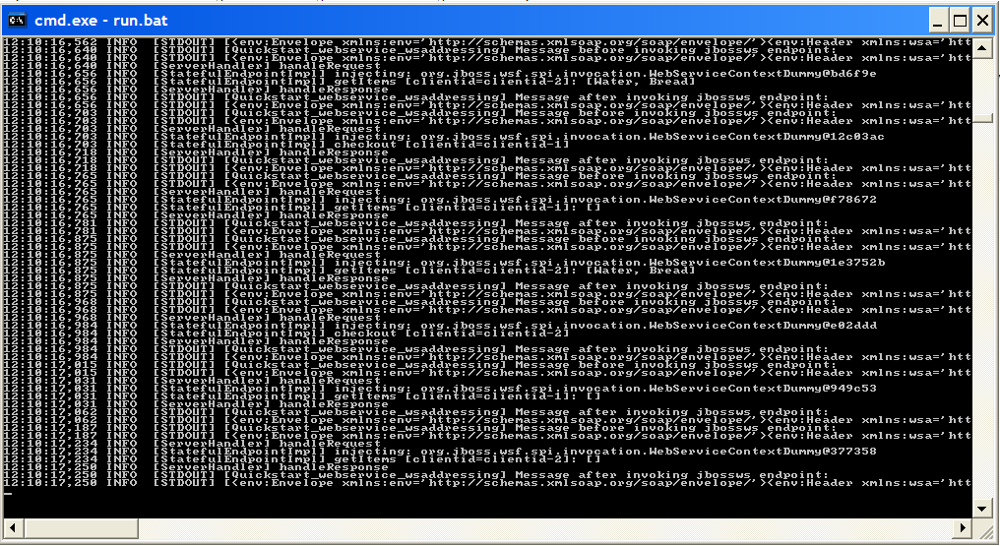
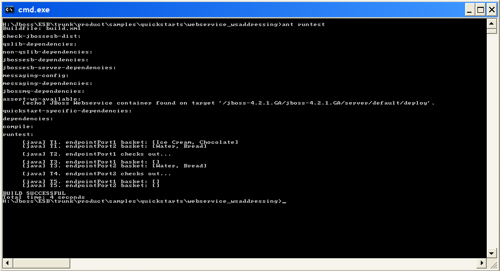

Overview
This sample demonstrates how to implement a stateful webservice using WS-Addressing and access it through
an ESB endpoint. JBossESB relies of JBossWS for WS-Addressing support.
See more here.
The sample is a really simple standalone shopping cart. The webservice client class uses JAX-WS client
code and creates 2 client port instances to perform add, get and checkout operations on the sample
cart.
As an excercise, you could attempt to implement the cart functionality as a Stateful Session Bean that gets
invoked via this webservice interface. This would mimic the usecase where the cart is a legacy service
implemented in EJB and you're using the ESB to expose a Webservice interface on that service.
Prerequisits
Please refer to 'ant help-quickstarts' for prerequisites about the quickstarts
and a more detailed descripton of the different ways to run the quickstarts.
NOTE: This Quickstart requires the JBossRemoting 2.2.2SP2 or higher patch to be applied.
This simply involves downloading jboss-remoting.jar
and copying it into your "server/<server>/lib" folder. Be sure to restart your JBoss
Application/ESB Server instance.
To Run
- In a command terminal window in this folder ("Window1"), type 'ant deploy'.
- Open another command terminal window in this folder ("Window2"), type
'ant runtest'.
- Check "Window1" and "Window2" for output.
- To undeploy, type 'ant undeploy' in "Window1".
"Window1" should contain ESB Server side logging from the quickstart, showing the message before and
after execution through the SOAPProcessor.

"Window2" should contain Client side logging from the quickstart, showing the view of the shopping
carts for both client port instances as the cart transitions through its different states. See
WSAClient.java.
